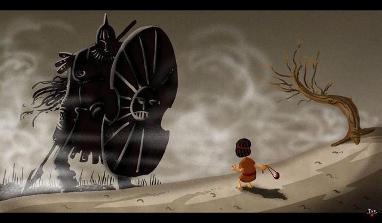

The story

Philipines and Israelites armies were stalled for weeks at the top of opposite mountains, because no one wanted to attack from the valley.
Philipines then resorted to single combat – when you send your best warrior to fight the enemy’s best warrior. They sent a 6 foot 9 giant, who claimed for an opponent.
Nobody wanted to fight that thing, until a shepherd offered himself to king Saul.
In the end the shepherd came down to the valley, the giant got upset because he saw no great warrior, the shepherd rolled his sling, hit the giant in the forehead dropping him down, grabed his sword and beheaded him.
Sheperd’s name was David. The giant was Goliath.
Malcom Gladwell explanation
At the time there were 3 kinds of warriors:
- cavalry
- heavy soldiers
- artillery (archers)
The artillery was formed of slingers, that used a sling. Sling was a powerfull range weapon. Rocks of that valley were 2 times more dense than normal rocks. Slingers could kill targets at 200 yards. History showed that slingers decided wars time and time again. Dadid was only a few meters away.
Goliath was expecting a warrior. Goliath was confused. He said “Come to me, so I can [destroy you]”. The key part here is “come to me”, because Goliath could not fight from long distance.
Goliath had no chance. Was David really a underdog?
We misunderstood Goliath
The Bible says that Goliath is guided to the valley by an attendent. The Bible makes a remark to how slowly goliath moves, and how long it takes Goliath to react to David. He saw Dadid and never tought of an opponent
Goliath was head and shoulders taller than his peers. The medical explanation for this, commonly, is called acromegaly (we know it as gigantism). One of the many side effects is double vision.
He was scorted down tho the valley, he was slow, he could not see David. Goliath did not understood that there was an opponent in front of him until the very last moment.
TL;DR: Giants are not as strong and mighty as they seem.
Watch the TED Talk